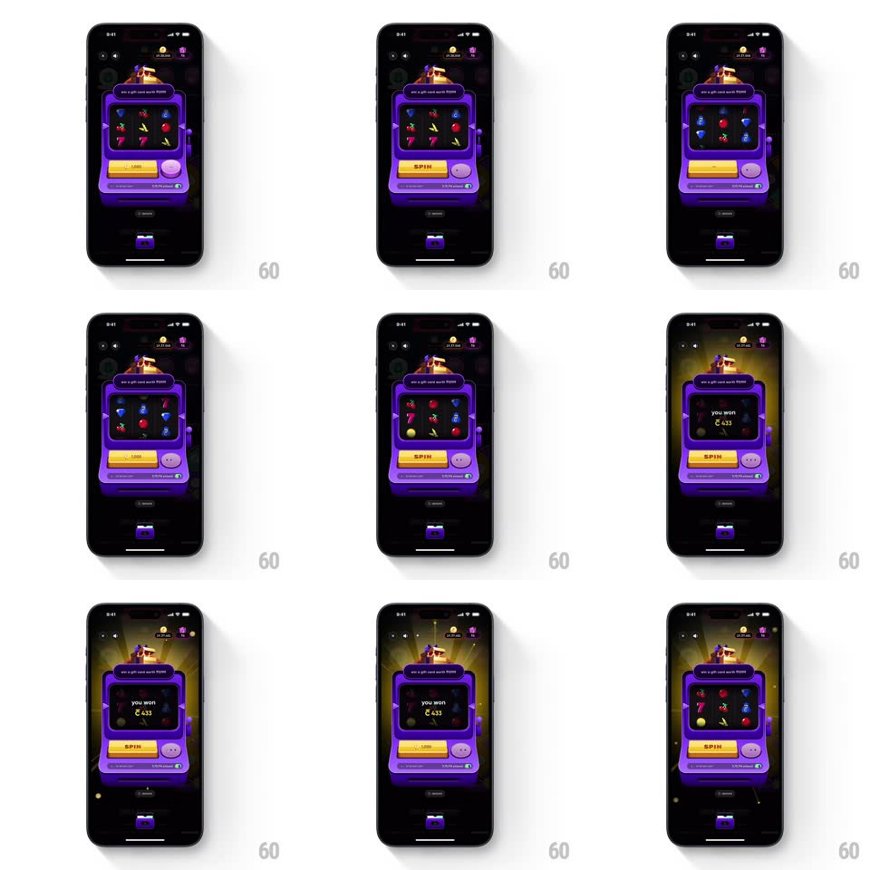

Media
Frame-by-frame

Rebuild this interaction 1:1: CRED's "all in" jackpot - a tactile purple 3D slot machine where pressing SPIN sends three reels into a blurred spin with staggered stops, and a win floods the machine with golden light and a ticking cash counter.

Rebuild this interaction 1:1: CRED's "all in" jackpot - a tactile purple 3D slot machine where pressing SPIN sends three reels into a blurred spin with staggered stops, and a win floods the machine with golden light and a ticking cash counter.
## Integration
Integration: stack-agnostic spec - springs given as stiffness/damping, timed motions as duration + curve; map every value to your framework and animation library of choice.
## Scene
CRED's dark rewards screen with a purple 3D slot-machine card ("win a gift card worth ₹5000"): a 3x3 reel window (7s, fruits, gems, coins), a gold SPIN button, a pink ALL IN knob, and a credit/balance pill at the machine's base.
## Motion spec
Pattern: tactile reel spin with staggered stops and win counter, ~2.5s spin.
- Press: SPIN compresses (scale 0.92, spring ~500/20 release) and the machine jolts (translateY +3 -> 0, 150ms); the ALL IN knob does a half-twist when used (rotate 180deg, 250ms, ease-out).
- Spin: reels accelerate vertically into motion blur (full speed in 300ms); rows streak past the window.
- Stops: reels stop left to right, ~450ms apart, each decelerating with a small overshoot and settle (spring ~260/18); the machine rocks subtly on each stop (rotate +/-0.8deg, 150ms).
- Win: golden light rays burst from behind the machine (scale 0.5 -> 1.4 + fade in, 450ms), the machine glows, and "you won ₹433" ticks up on the face (counter 0 -> final, 700ms, ease-out) with coin sparkles; the SPIN button dims while the counter runs.
- No-win: reels settle, a brief machine shake (translateX +/-4px, 200ms), balance pill updates with a number flicker.
## Calibration
- Reels stop in strict left-to-right order; blur only while moving.
- The win counter lands exactly on the amount added to the balance pill.
## Reduced motion
Reels crossfade to results; counter sets instantly; no shake or rays.
## Don't miss
- The machine reads as a physical object - shading, highlights, and the jolt on press.
- The light burst originates behind the machine, silhouetting it.